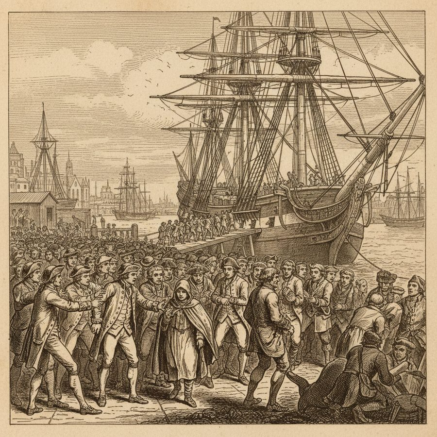
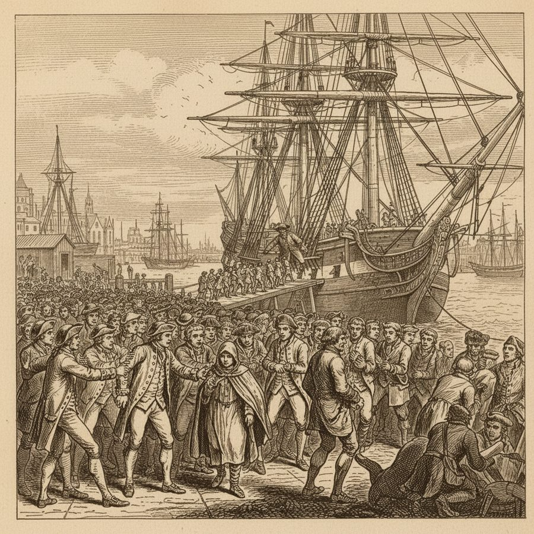
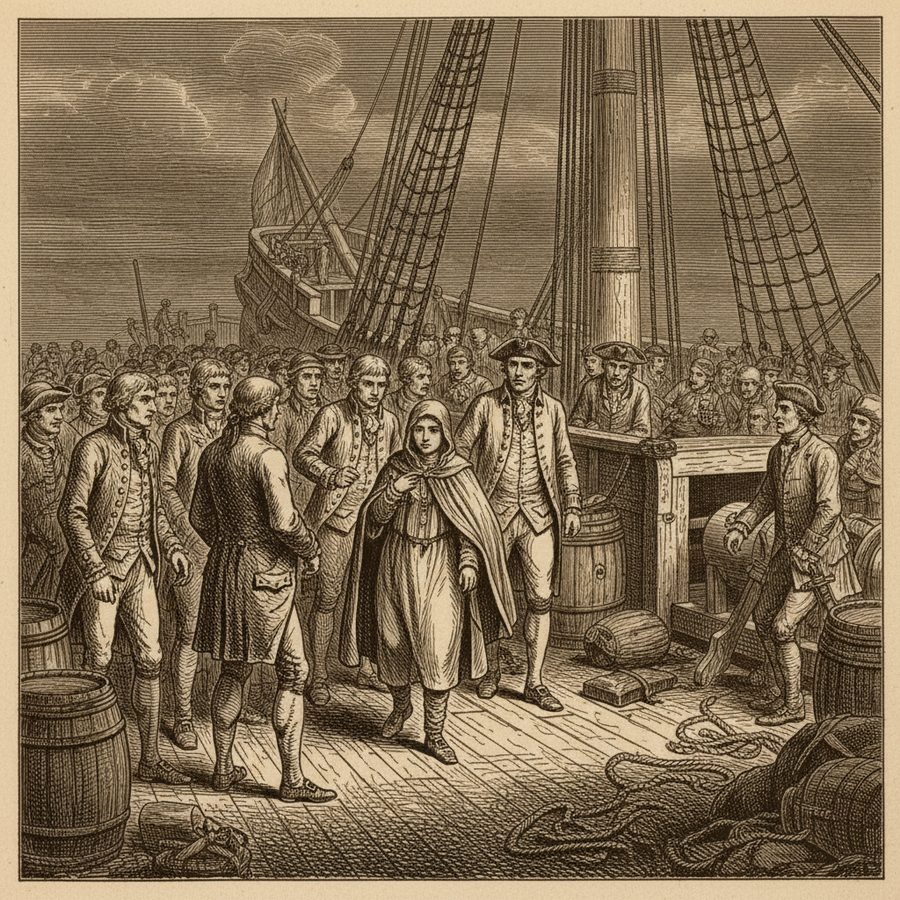
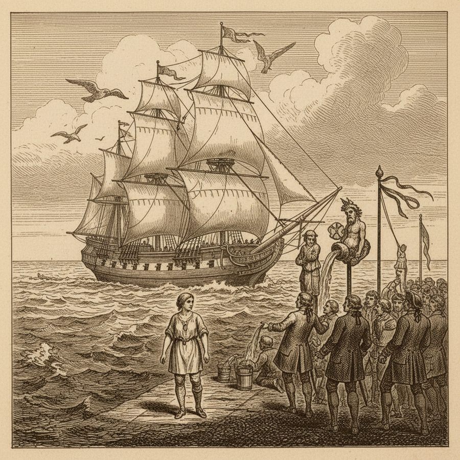

The Female Volunteer — a Woman Aboard
Among the press of men scrambling onto the outward-bound Indiaman, one 'volunteer' turns out to be a woman.
Among the earliest pictures of the voyage, Noble records how a woman slipped aboard the ship during the chaos of manning her for sea — 'a female volunteer gets aboard, but discovered.' It is one of those small human incidents that the formal histories leave out: a woman surviving the press at the river and getting herself onto an East Indiaman bound for the other side of the world, only to be found out. Noble sets it beside the superstitions and customs of the passage — the old observances when the ship crossed the Tropic and the Equator, and the strange birds of the open ocean — a glimpse of life aboard before land falls out of sight.
Figures: the female volunteer, the ship's company, Noble
The story as a comic




Why it stands out
It is a tiny mystery at the start of the book that sticks in the memory — 18th-century ships were crowded, unruly worlds, and the press gangs at Gravesend let all manner of passengers slip through; a lone woman going to sea in secret is the kind of detail only a real diarist preserves.